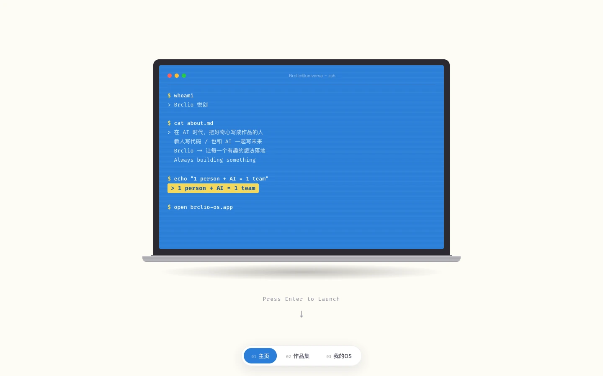

厦门工学院 · 现场讲座
AI 浪潮下，
我们该怎么学？
不止提出问题，更要解决问题。
黄家宝悦创 / Brclio
我的起点 · 2018
一篇笔记，
怎么写成了一本书？
读软件工程的时候，我就开始写学习笔记。
黄家宝 ·《编程启蒙：思维与代码》
私教课程回放
这些课录下来，
占了多大空间？
1.96 TB · 部分课程回放
一种能重复的学法
查到答案以后，再做什么？
定问题
我卡在哪一步？
找资料
谁已经做过？
照着做
我能复现吗？
写出来
别人能跟上吗？
一段聊天记录
有一个想法，
谁能把它做出来？
实习僧 · 一次新媒体岗位招聘
如果你来招人，
你想先看见什么？
实习僧 · 招聘原图
这个岗位，
需要什么作品？
先看岗位，再看简历。
真实简历 · 第一组
你能直接看见哪件作品？
真实简历 · 第二组
哪一份让你想继续看？
两种看作品的方式 · 情境示意
同一份作品，你会点哪个？
下载作品集
打开网盘 → 登录 → 下载 → 解压
打开我的代表作 ↗
点开链接 → 看见成品
域名与个人网站
给作品一个
自己的门牌号。
平台帮人发现你，
网站让作品留得住。

学习路线 · 不限专业
从一份作业出发，
你可以走多远？
现场小实验 · 用对话做工具
社团拍了一堆照片，
交稿前怎么命名？
先做一个能试的版本。
专业 × AI · 我的 B 站视频封面
AI 会出图。你先看见了什么？
标题放多大？ 画面该删什么？ 谁会点开？
我的 B 站投稿页
放回这一排，你还会点哪张？
把自己的做法教给 AI
把做顺的一遍，
留给下一遍。
一起做完 → 确认规则 → 下次复用
选电脑
先看你要做什么，
再决定买什么。
选 AI
给每个 AI 同一份作业。
活动名是「迎新展」，按 01、02 编号，保留 .jpg 后缀。
我的常用选择ChatGPT
其他可试的工具DeepSeek Harness / WorkBuddy
邀请隔壁专业的同学听一听
不说术语，
你能把「域名」
讲给我听吗？
把我当成第一次上网的人。
油饼摊的两笔账 · 上
一张油饼，
要不要多挣两毛？
卖 2 元，原本成本 5 毛。
油饼摊的两笔账 · 下
另一位摊主，
多包了一张纸。
下次路过，你会去哪一家？
Learn in Public · 公开学习
多年写下的文章，
让人搜到了
我的网站。
两次真实查询
AI 的回答，
把人带到哪里？
批判性思维
AI 说「写好了」。
你试过了吗？
换个输入，再点一次。
假设旧版工具漏了一项检查
只说「它坏了」，够吗？
清空活动名，点「预览」。
仍然生成了「-01.jpg」。
提醒我补填名称。
学习材料也要自己选
想练开会发言，
为什么先逼自己
啃一本英文名著？
学来做什么？ 谁已经做到了？
Builder · 把想法做出来的人
做一个东西，哪一步变容易了？
先选一个，再听我的答案。
Builder · 我的判断
实现快了，两头更难了。
有人真的需要吗？谁能把它讲清楚？
做东西的人，练什么？
原稿配图 · Builder
这三张图，连起来怎么看？
把自己的项目交出去
先看项目卡在哪一步。
留给你的一个动作
今晚，挑一份作业。
让一个人打开它。
问他一句：「你看明白我做了什么吗？」
咨询与合作
讲完以后，我们继续聊。
在场同学可获一次免费咨询 · 学习计划、技术与 AI、简历改进
交流群位置预留
学校开设 AI、编程、Vibe Coding 相关课程，也欢迎联系合作。
现场问答
Q&A
你现在卡在哪一步？
黄家宝 / 悦创 · Brclio